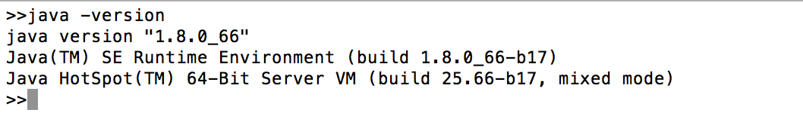
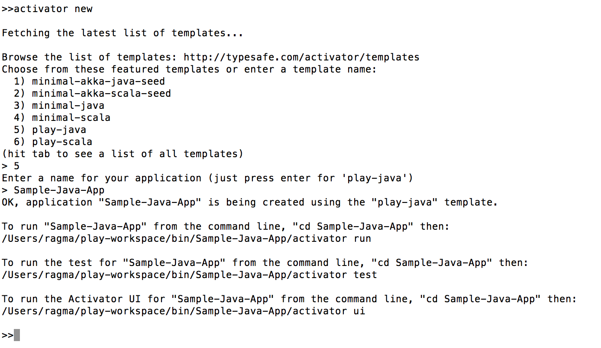
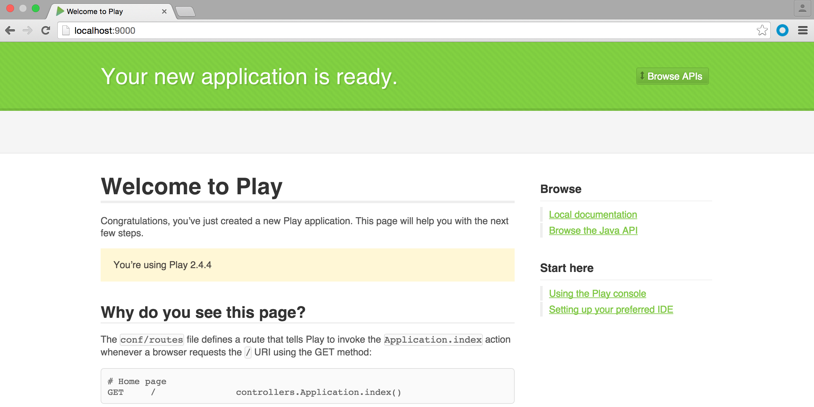
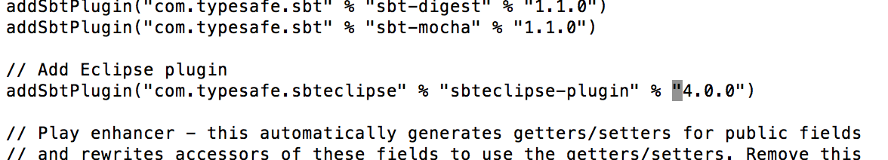
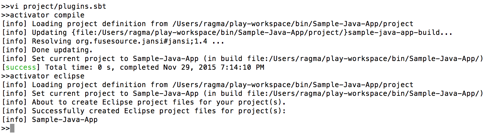
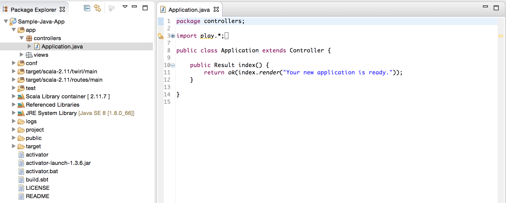

Play! Framework
What, Why and How
The
Play Frameworkis an open source lightweight framework for developing
Javaand
Scalaweb applications based on the Model View Controller (MVC)
architecture. It was created by Guillaume Bort while working at Zenexity
and the intial release of Play, 1.0 was released in 2007. After a complete
re-write of Play APIs to Scala, Play 2.0 was released in 2012 in conjuction
with
Typesafestack. Currently, Typesafe provides
commercial
supportfor the stable version of Play which is Play 2.4.3.
Play follows a stateless, multi-threaded, fully asynchronous web architecture
which enables high-scalability for web applications. It is also developer
friendly - supports hot deployment(hit refresh workflow), easy error handling,
built-in testing, integration with IDE eclipse/idea. Play also supports
Type safetyas Scala and Java are inherently type safe languages. Another
important aspect of Play, that is not often emphasized on, is that you
can also develop
Reactive
web applicationsusing Play.
Core Components
Play Advantages
-
Play is stateless (and so is the Web). This means that the framework
itself will not store any information between user's requests. Along with
its fully asynchronous capabilities, Play can scale predictably for large
applications. If the application requires information persistence, then
it should make use of a database or use cookies or a memory-cache.
This feature is brought around nicely by Peter Hilton in
this
videowhere he talks about
notbreaking the first two buttons in a browser - the reload and back
buttons, by handling them explicitly in stateful frameworks like Spring
MVC.
-
Positive developer experience by simplifying some of the most common
application development steps,
-
Hot deploy(hit refresh workflow) - Solves one of the most annoying
problems related to developing Java web applications. Although it still
takes some time to build and compile, it is taken care automatically by
the framework itself. Additionally SBT's
incremental build approachalso reduces the build/compile time.
-
Error Handling and Logging - Errors are thrown on the webpage along
with detailed explanation so that you don't have to open up server/application
logs and scan through them. Also, logging(using Logback) in Play applications
is automatically configured when the application is created (conf/logback.xml).
-
Inbuilt testing - To test your application, simply add application
test files under the test directory in your project and then run the tests
from the console using
testand
test-onlycommands.
-
Easy integration with Eclipse/Idea, and a bunch of other modules that
can be found on the
Play
Wikiin Github, that improve developer productivity.
-
Reactive applications - With Scala, one can develop powerful asynchronous
and non-blocking programs for handling streams of data in Web applications.
Play provides the
Iterateesand
Enumerator/Enumerateesconstruct for consuming and producing data
respectively. They are based on the functional programming paradigm of
Scala and are far more expressive for developing reactive applications
compared to other web frameworks. Play uses WebSockets to establish bi-directional
connection between client and server. I would suggest going through the
book
Scala For Java Developersto get a good understanding of Iteratees
and Enumerators.
Why should I not use Play
-
Although the current version of Play - 2.4.3 is stable, Play as a
framework is not mature enough with lots of development activity in progress
and also version changes are not backwards compatible.
-
Deploying your Play application is not an easy task (I will write
a tutorial on this in some time) and there are limited deployment options
like Heroku, Cloudbees.
-
Play documentation is really good, but apart from that, there are
only a handful of tutorials.
-
Steep learning curve to understand the framework before getting started
with development.
-
Other cases when you want to avoid using Play are
-
Small projects/ Quick hacks (which are not getting complex)
-
Small teams - Application maintenance is not your objective.
-
Application is primarily I/O bound and not much CPU intensive.
Let's get started!
Install and Setup Play
Note: Java 8 (JDK 1.8 and above) is required for developing Play 2.4+
applications.
Getting started with the Play framework is fairly simple and straightforward.
Play 2.3 and above are bundled along with
which provides a nice UI for compiling, testing and running Play applications.
-
Setup and configure the Java environment (JDK 1.7/JDK 1.8). Refer
this
linkfor more details on this step.

-
Download latest version of Play with Activator
Play
2.4.3 "Damiya" and extract the zip file.
tar -xvf typesafe-activator-1.3.6.zip
-
Add the Activator executables to your system PATH.
For Unix,
export PATH=/<path to activator>/typesafe-activator-1.3.6/bin:$PATH
Add the export statement to your bash profile
(.bashrc or .bash_profile)
For Windows,
Add
;<path to activator>/typesafe-activator-1.3.6/binto your
PATH environment variable.
Now you are ready to develop Play 2.4 applications!
For more details on installing, refer the official documentation
Installing
Play.
Creating a Play application
Before creating a new Play application, make sure that you have configured
and setup the Play framework. Test the setup by running
activator ui
from any directory in the terminal and it should open up the local instance
of activator on the browser.
To create a Play 2.4 application
- Change directory to the location where you want to create the new project
and use the activator command.
cd <path to workspace>
activator new <project name> [<template>]
The home directory for this newly created project is
<path to workspace>/<project name>
Template field is optional and can be used to initialize the Play project
with basic files and configuration according to the template.
For example, the following command initializes a Play Java project named
Sample-Java-App.
activator new Sample-Java-App play-java

- Type
activator run
from the project home directory and if everything went well you should
see the project compiling successfully and has started listening by default
on localhost, port 9000.
To verify go to
localhost:9000on your web browser and you should see the Play welcome
page.

- Play provides easy integration with Eclipse and Idea.
Firstly add the Eclipse/Idea plugin to the
project/plugins.sbtfile,
addSbtPlugin("com.typesafe.sbteclipse" % "sbteclipse-plugin" % "4.0.0")and
compile your project using
activator compile.

Then, to open the newly created Play application as an Eclipse project
run
activator eclipse
from the project home.

Import as an existing project.

Links for further reading